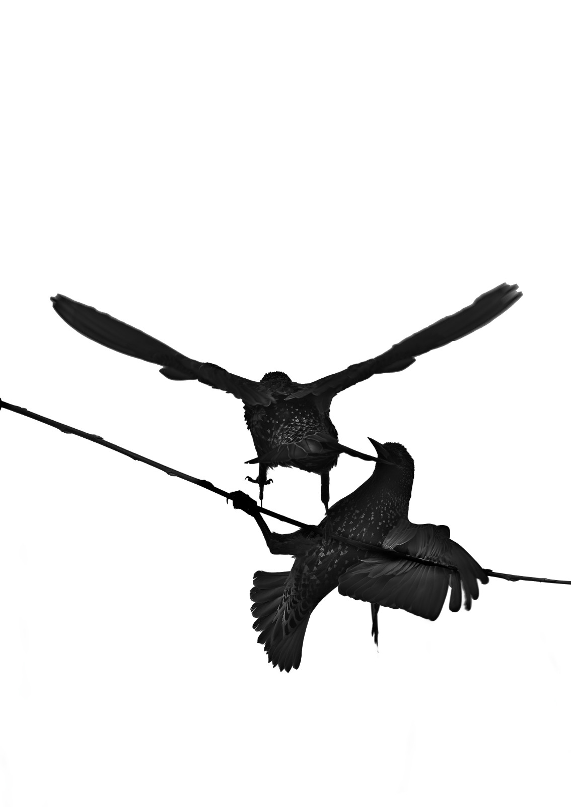
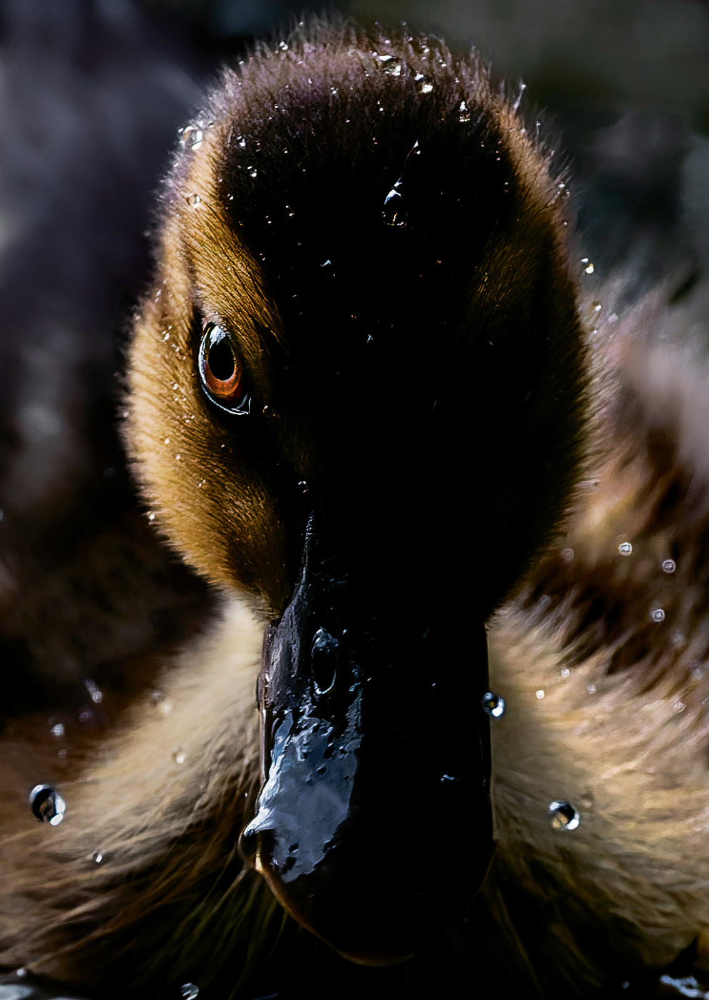
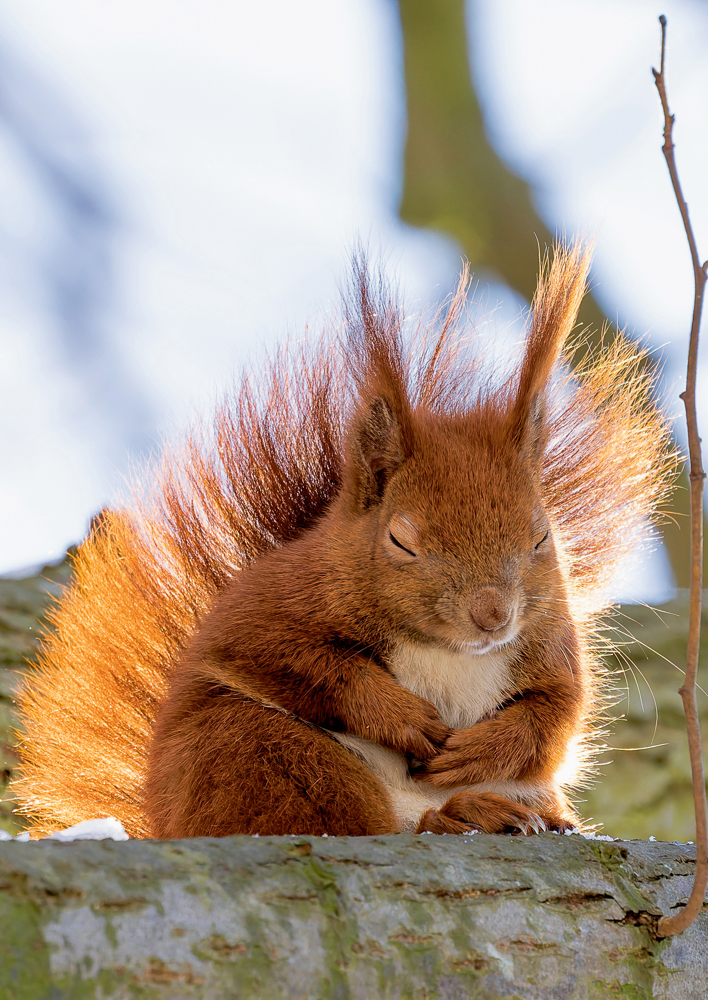
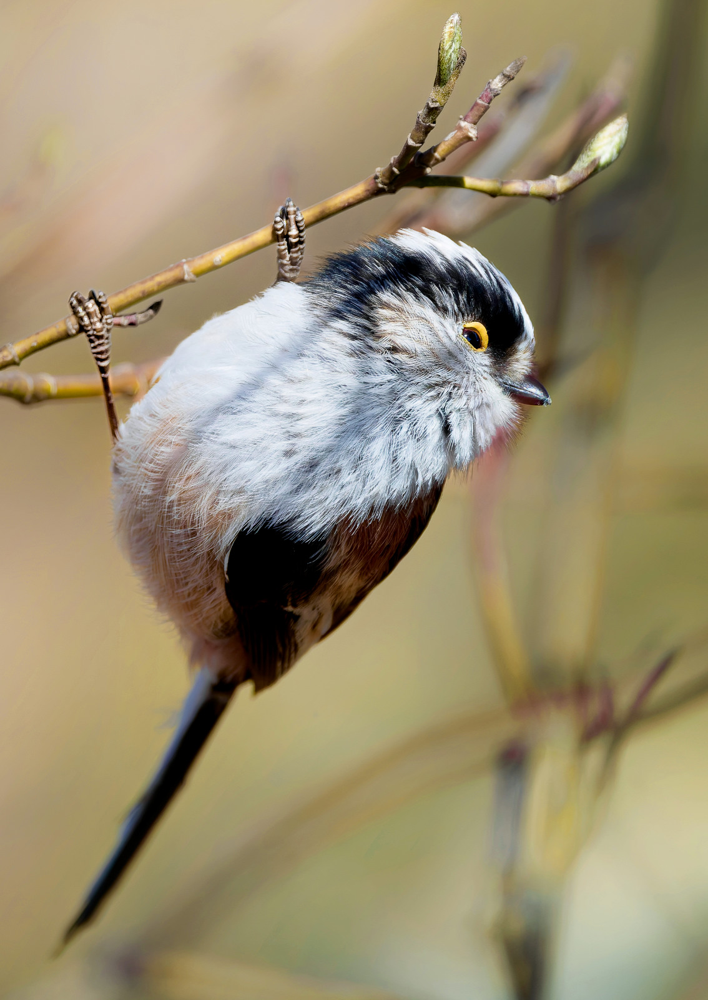
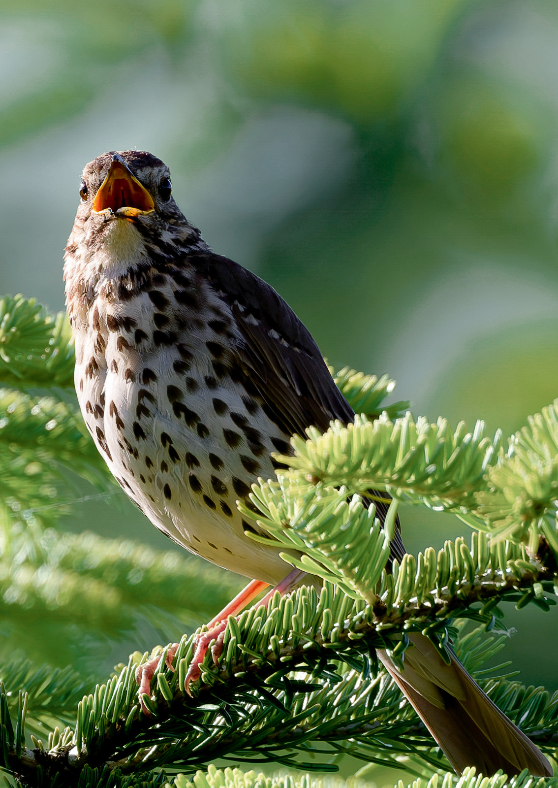
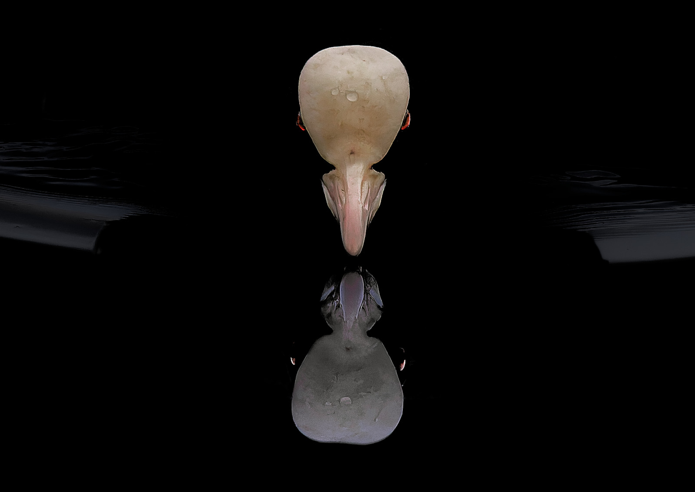

Vogel- und Naturfotografie aus Norddeutschland






Ich fotografiere Vögel und Tiere in Schleswig-Holstein und im Hamburger Westen, mit dem Fokus rund um meinen Wohnort Halstenbek. Rotkehlchen, Schwanzmeisen und Gimpel im Garten, Enten und Reiher am Teich, Eichhörnchen und Spechte im Wald. Immer im natürlichen Licht, immer in der Nachbarschaft.
Der Reiz liegt für mich nicht in der Ferne, sondern im Alltäglichen. Fast jedes Motiv können die Käufer*innen am nächsten Morgen im eigenen Umfeld wiederfinden.
Gestaltet ist alles von mir, gedruckt wird bei WIRmachenDRUCK (Postkarten), Saal Digital (A4) und Peterprint (Lesezeichen). Verpackung und Verkauf mache ich selbst. Preise als Orientierung, Sets und Bundles variieren. Stand September 2026.
Teichleben, Gartenleben und Waldleben zeigen die Natur vor der eigenen Haustür: lebensnah, real und aus dem Moment heraus. Reduktion ist die vierte, bewusst gestaltete Serie: echte Aufnahmen, grafisch zurückgenommen auf Silhouette, Fläche und Farbe.
Zu vielen Motiven gehört eine Geschichte: das Warten am Teichrand, der Specht, der nach zwanzig Minuten doch noch aus der Höhle sah, die Schwanzmeise, die genau einmal in die Kamera flog. Diese Geschichten schreibe ich auf und mache sie über einen QR-Code am Stand zugänglich, der zu einer Seite mit der jeweiligen Aufnahme führt.
Dort steht neben der Erzählung ein kleiner Datenblock: wissenschaftlicher Name, Fundort, Aufnahmedatum, Rote-Liste-Status. Aus einer Postkarte wird so ein Stück Naturbildung und ein Gesprächsgrund für viele Besucher.
Und weil das Vertrauen dazugehört: Ich füttere nicht an und locke keine Tiere. Was auf den Bildern zu sehen ist, ist im Moment entstanden. Als NABU-Mitglied in der regionalen Ortsgruppe ist mir das wichtig.
Ansichtsexemplare auf Anfrage · Alle Aufnahmen © Benedict Gertz